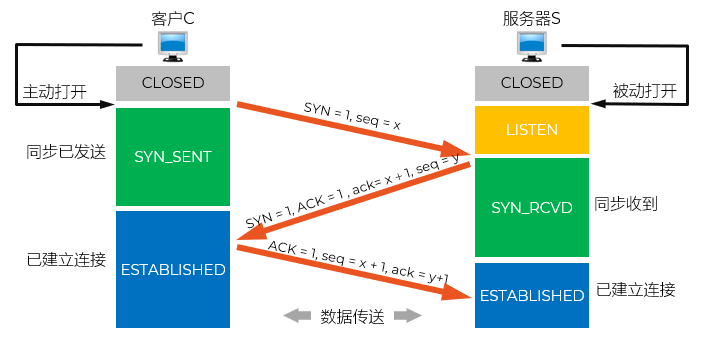
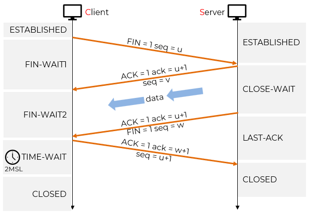

传输控制
@Transmission Control- 通信过程 Procedure
- TCP 是面向连接的协议
- TCP 的连接管理就是使 TCP 连接的建立和释放都能正常地进行
- 连接建立 - 三次握手
- 数据通信
- 连接释放 - 四次挥手
连接建立 Three-Way Handshake
- TCP 连接的建立采用客户服务器 C/S 方式
- 主动发起连接建立的应用进程叫做客户 C - Client
- 被动等待连接建立的应用进程叫做服务器 S - Server
- 关注 Focus
- 要使每一方能够确知对方的存在
- 要允许双方协商一些参数（如最大窗口值、是否使用窗口扩大选项和时间戳选项以及服务质量等）
- 能够对运输实体资源（如缓存大小、连接表中的项目等）进行分配
- 解决方案 Solution
- 采用三次握手 Three-Way Handshake
- 客户和服务器之间交换三个 TCP 报文段
- 以防止已失效的连接请求报文段突然又传送到了，因而产生 TCP 连接建立错误
- 不会闪婚的TCP
- A TCP packet walks into a bar and says to the bartender, “I'd like a beer.”
- The bartender says, “You'd like a beer?”
- The TCP packet says, “Yes, a beer.”
- 借助报文的控制位和序号实现
- 通信双方要发送3个报文才能建立连接
- 客户端 C 主动发起连接；选择初始序号为 x
- 服务器 S 被动接受连接；选择初始序号为 y
- 1. 第一次握手 SYN
- C 向 S 主动发出连接请求报文段，进入 SYN_SENT 状态
- 同步位 SYN = 1，序号 seq = x
- 消耗一个序号
- 不能携带数据
- 2. 第二次握手 SYN+ACK
- S 收到连接请求报文段后，如同意，则发回确认，进入 SYN_RCVD 状态
- 同步位 SYN = 1，确认位 ACK = 1，确认号 ack = x + 1，序号 seq = y
- 消耗一个序号
- 仍然不能携带数据
- 3. 第三次握手 ACK
- C 收到此报文段后向 S 给出确认，进入 ESTABLISHED 状态
- 确认位 ACK = 1，确认号 ack = y + 1
- 可以携带数据
- 如果不携带数据，则不消耗序号；但是下次发数据仍从 x+1 开始
- 说明 Notation
- TCP 的序号是为数据字节服务的
- 第三次握手的 ACK 报文本身不包含数据，所以它虽然设置了 seq = x+1，但不产生实际数据字节
- 因此，这个序号不会被真正使用或消耗
- 后续发送数据时，仍然可以从 x+1 开始
- 但如果携带了数据，则这些数据会占用序号空间，属于消耗
- 连接参数的协商，绝大多数都是通过 TCP 头部中的 Options 字段传递：MSS、Window
- 使用了 Options 后，TCP 首部的偏移就不再是 5（最小值），还要加上 Options 的字节数
情深款款的TCP
Joke Time
日常谈话

SYN → SYN+ACK → ACK

四次挥手 Four-Way Handshake
- TCP 连接释放过程比较复杂
- 因为支持全双工通信，双方必须都要确认通信完毕才可以释放连接
- TCP 连接释放采用四报文握手
- 1. 第一次挥手
- C 没有数据要发送；发出连接释放报文段，主动关闭 TCP 连接
- 同步位 FIN = 1，序号 seq = u
- 进入 FIN_WAIT_1 状态，等待 S 的确认
- 2. 第二次挥手
- S 发出确认
- 确认位 ACK = 1，确认号 ack = u+1
- S 进入 CLOSE_WAIT 状态；通知高层应用进程；从 C 到 S 这个方向的连接就释放了，TCP 连接处于半关闭 Half-Close 状态
- C 收到 ACK 后，进入 FIN_WAIT_2 状态
- S 若发送数据，C 仍要接收；并指定序号 seq = v
- 3. 第三次挥手
- S 发完数据；通知 TCP 释放连接；再次确认 C 的释放连接
- 同步位 FIN = 1，确认位 ACK = 1，确认号 ack = u+1，序号 seq = w
- S 进入 LAST_ACK 状态；同时启动一个重传定时器（retransmission timer）
- 如果在超时时间内没收到 C 的 ACK（第 4 次挥手），B 会重传 FIN
- 4. 第四次挥手
- C 收到连接释放报文段后，发出确认
- 确认位 ACK = 1，确认号 ack = w+1，序号 seq = u + 1
- C 进入 TIME_WAIT 状态；持续 2×MSL，C 才释放 TCP 连接
- S 收到确认后，进入 CLOSED 状态，连接彻底释放
- MSL（Maximum Segment Lifetime）
- 表示 TCP 报文段在网络中能够存在的最长时间，即最大生存时间
- 超过 MSL 后，该报文段应被所有路由器或主机丢弃，不再传递
- 典型值：30 秒、60 秒、120 秒（不同系统可配置，RFC 建议不超过 2 分钟）
- 主动关闭方在发送最后一个 ACK 后，会进入 TIME_WAIT 状态，并持续 2MSL 时间，然后才真正释放连接
- 确保对方收到最后的 ACK（可靠性）
有足够时间接收 B 可能重传的 FIN
- 防止旧连接的报文干扰新连接（避免“迟到的报文”问题）
确保网络中所有属于旧连接的报文都已过期
- 说明 Notation
- S 释放连接时，再次确认 u+1，是因为 TCP 要求每个报文段都必须包含最新的确认号，即使该确认号与之前相同。这是协议设计的一部分，确保状态同步
- C 最后报文使用 seq = u+1 是它下一个发送序号，符合 TCP 序号递增规则。即使没有数据，ACK 报文也必须携带正确的 seq，以维持协议状态一致性和防重放
- 四次挥手在实际网络中，考虑到重传的因素，可能变成 4 次、6 次、8 次……报文交互，但逻辑上仍是四步

Summary & Homework
- Summary
- 三次握手
- 四次挥手
- Homework
- TCP连接释放中，如果服务端 S 收到了客户端 C 的释放请求报文，自己已经没有数据要发送，则应该回复（），并进入（）状态。
- A. FIN=1 ACK=1 ack=u+1，LAST_ACK
- B. FIN=1 ACK=1 ack=u+1，CLOSED
- C. ACK=1 ack=u+1，LAST_ACK
- D. ACK=1 ack=u+1，CLOSED